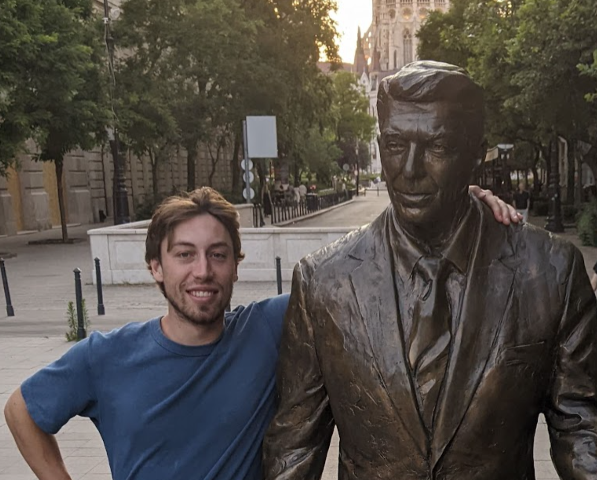
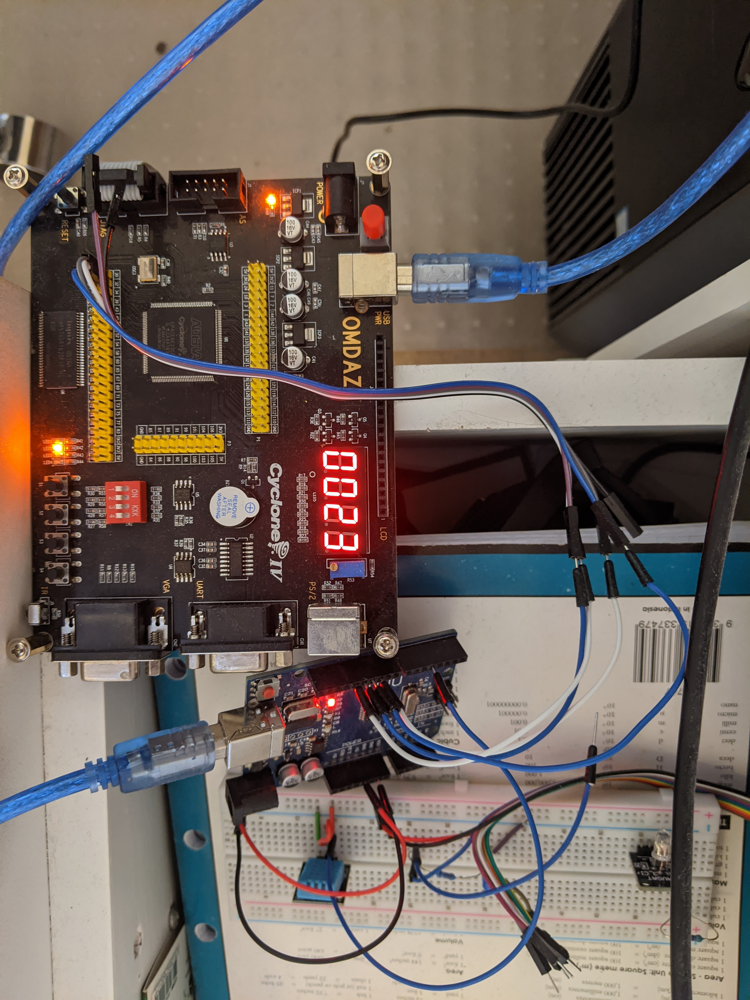
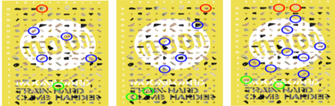
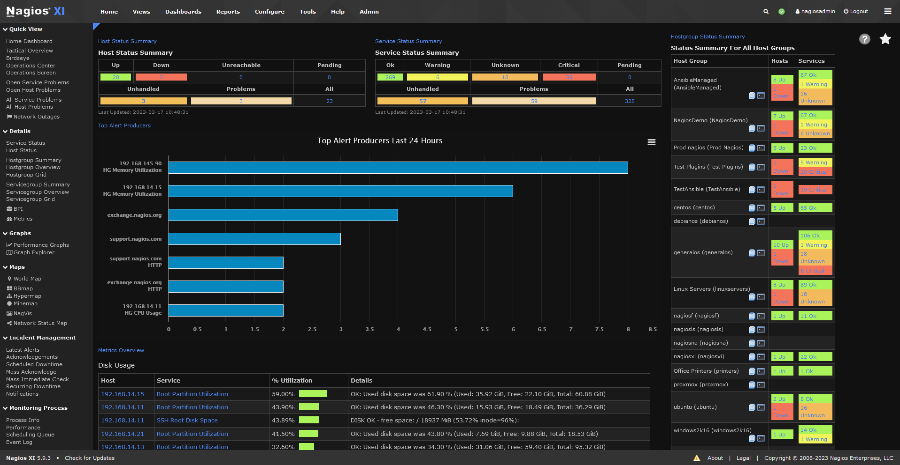
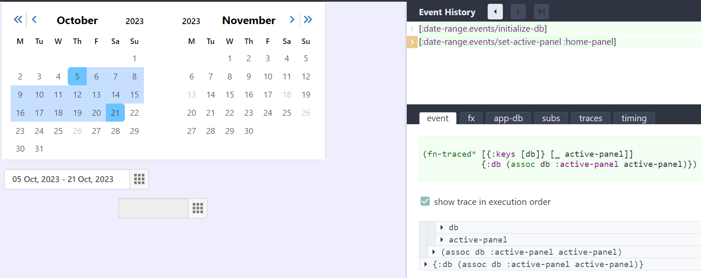

About Me
Hello! My name is Robert Thompson. I created this site as an easy way to share a bit about myself.
I studied Electrical Engineering at UTS because of my interest in building things, optimizing, and its general versatility as a degree. Throughout my time at UTS, I not only acquired technical skills but also gained insight into what motivates me and where I'd like to take my career.
Throughout my career, I hope to provide expertise in software development, IT/OT, electrical engineering and electronics design to help and contribute to teams and projects I find enthralling. I aim to contribute my little part to the wild world of modern technology and have fun along the way.
My strengths lie in big-picture thinking and idea generation. I relish devising creative solutions and thinking outside the box. I am able to quickly generate new approaches and ideas without becoming too attached and heading in the wrong direction. I often find myself more on the practical side than the theoretical.
Outside of university and work, I'm passionate about sports! A loose list, from my most to least interested (currently), would be: rock climbing, futsal, skiing/snowboarding (time and money permitting, haha), Brazilian jiu-jitsu, downhill skateboarding, hiking, cycling, surfing, and more recently; kayaking and sailing! While I no doubt enjoy solving complex technical problems, I also enjoy spending time reflecting and relaxing in nature.
Professional Skills
I have experience and skills in very high-level programming (clojure/clojurescript repl-driven development) and lower-level programming (assembly and C at university), with a lot in between (Python scripting, Java/Maven development).
I'm adept at working with Windows and Linux (including CLI) machines remotely, understanding the complications that arise. I possess solid skills in SQL and databases, Nagios and other health and monitoring platforms, networking, and hypervisors. I'm also proficient with Excel, the Microsoft suite of products, and their Google counterparts. I know when to 3-bet from the big blind when facing an open from the high-jack.
I know git.
I consider myself an expert user of generative AI, especially GPT-4 and Phind. I've been ahead of the curve with many of these technologies, handling them with finesse and understanding to produce high-quality work swiftly without compromising company IP.
I have experience with and enjoy working in teams, whether it be remote or in-office. I know how to communicate professionally in a no-nonsense and concise manner without being overly blunt. I understand how to talk shop but also create meaningful and enjoyable friendships with people from all walks of life.
I enjoy learning new technologies. I am curious to learn their pros, cons, quirks, and design principles. While I enjoy moving and learning fast I can also slow down and be details oriented when necessary.
Excellent skills and experience in working with clients to refine project specifications to an agreeable and achievable timeline. E.g. explaining the limitations on the flexibility of JSON parsing to non technical stakeholders.
Academic Experience and Projects
Collaborated in a team to model and write three types of controllers to successfully balance a Rotary Inverted Pendulum. I was responsible chiefly for the modelling of the system and the design of the discrete time controller, which performed excellently. I learned a lot about control theory and Matlab. (Maths, MatLab, Control Theory, Arduino C).
Lead a team project to plan and write software for various tasks related to navigating a small robot in a maze. Using the Robot Operating System to handle detecting certain shapes and colours, simultaneous localisation and planning (SLAM), and path planning. We achieved a 28.5/30 in which we dropped a few points due to writing some slightly hacky and domain specific code (which was considerably more efficient). (ROS, Python, computer vision, pathfinding, and planning algorithms).
Successfully designed multiple digital and embedded systems; designing fully featured digital alarm clocks from the ground up (from gates) and protocol compliant embedded systems on bare bones microcontrollers (digital logic, Embedded C, various communication protocols, Quartus Prime, Verilog/VHDL).
Worked in a group to successfully research, plan and design (not implement) a sustainable microgrid for a rural town within Australia. Researching various energy generation and storage solutions and modelling with MATLAB and Simulink. I was responsible for writing the simulations which determined the size and specifications of the distributed energy resouces required in the town. We achieved a high distinction for our work.
Researched and designed machine learning models to classify rock climbing route difficulties for my capstone research project. Using python based libraries pytorch, opencv and scikit learn I created and compared various machine learning classification models for the task of grading the difficulty of MoonBoard climbs, more information here. (image processing, machine learning, python, research, and report writing).
Professional Experience and Projects
At Langdale Consultants, a small bespoke engineering consultancy;
I authored, tested, deployed, and monitored various pieces of software designed to gather and manage data from multiple pieces of infrastructure within the expanding smart electricity grid. I achieved and received commendations from co-workers and clients alike (Java, Maven, Git, Jenkins, Artifactory, Karaf, ActiveMQ, Linux, communication with clients, communication with external API providers).
Set up comprehensive infrastructure monitoring platforms to ensure the stability of our production environment, achieved a considerable improvement in the visibility of our stack. Usage of Python scripts written alongside various other technologies like JMX to achieve visibility at the granular application level. (NCPA, NagiosXI, Python).
Responsible for representing our team at various technical meetings with our clients, e.g. advising on networking changes that might affect our systems. (MS teams calls, email communication).
Refactored and improved various parts of our production code and improved the CI/CD stack.
At Day8 Technology, junior software developer internship;
Successfully developed and documented various high-level front-end web UI components in clojurescript for our public component library, e.g. datepicker (yes, another datepicker, haha).
Leadership Skills
When I am in leadership positions, I feel responsible for the performance of the group as a whole and aim to allow every group member to contribute to their best ability. This means creating an environment where people do not feel left out or left behind and feel as though their opinions are truly heard.
In many University group assignments I have assumed the role of ad-hoc leader, such as the previously discussed robotics group. I stepped up to take the leadership role in the group, I fairly distributed work based on skills and encouraged others with assistance and by putting good work forward myself. I kept communication channels open and active as is necessary in any successful group project.
With my leadership and excellent contributions from my fellow teammates we were able to combine multiple pieces of code effetively to solve complicated computer vision and path planning problems.
Teamwork Skills
I thrive in team settings. The opportunity to bounce ideas and energy off others is not only essential for producing remarkable results but also makes the journey enjoyable. "If you want to go fast, go alone; if you want to go far, go together."
In the university group I was in for designing the control systems for the rotary inverted pendulum, we had a very headstrong and intelligent group member who assumed the de-facto leadership position. For some of our group members, they did not particularly like his leadership style, and struggled to contribute meaningfully in the unfamiliar conditions. I noticed their faltering commitment and positioned myself in between them and the de-facto group leader. I was able to provide them with the communication and support they needed to thrive while also translating their methods of communication to something our task-oriented leader could understand.
Throughout my University career I have thoroughly enjoyed working in groups. On multiple occasions I have had past group members reach out to me once they realised that I am also enrolled in the same group based subject as them!
Site Details
I created this site with plain css and html as a return to simplicity. The site is hosted for free by github pages.